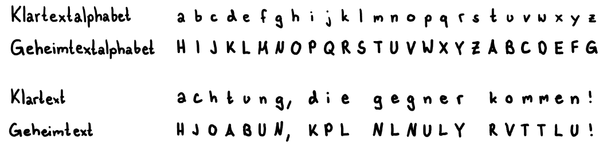
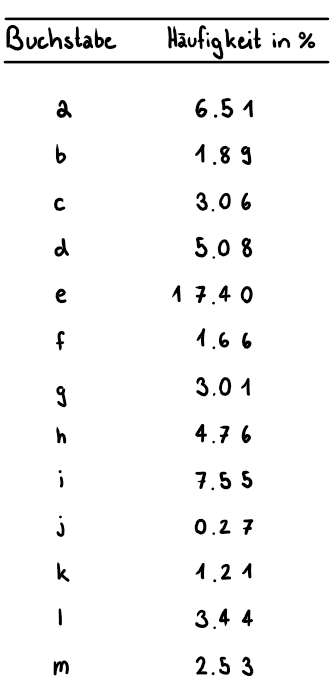
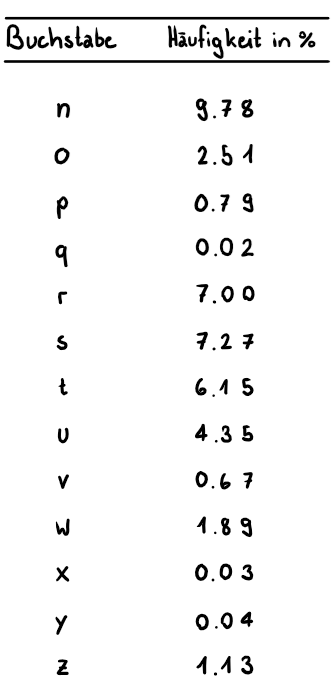
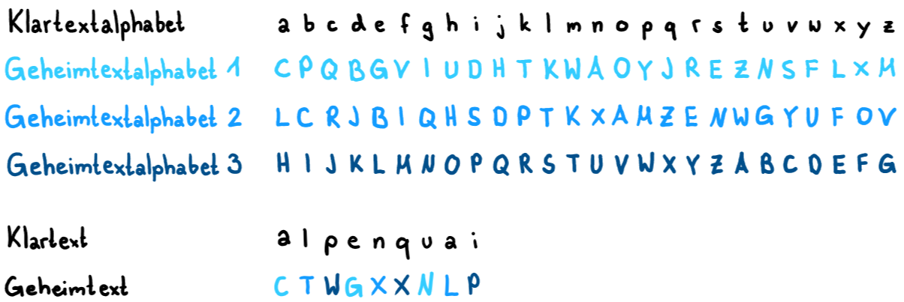
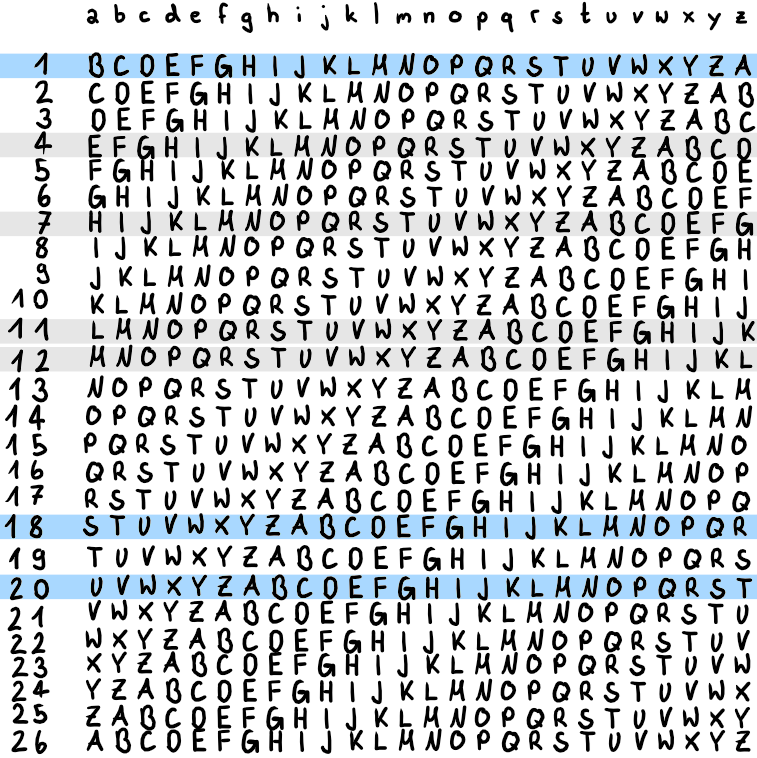
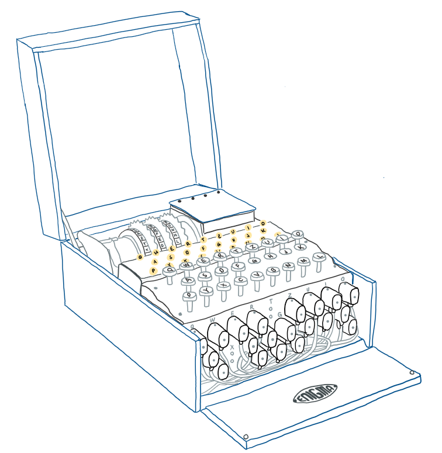

Herzlich willkommen zu meiner Verschlüsselungswebseite. Meine zentrale Fragestellung ist: "Wie kann ich eine Webseite mit verschiedenen Interaktionsmöglichkeiten für Verschlüsselungen schaffen?" Hier könnt Ihr sehen, wie es mir gelungen ist.
Als Erstes habe ich mich für die Caesar-Verschiebung entschieden. Diese ist eine einfache und übersichtliche Verschlüsselung. Sie ist einfach zu verstehen und somit ein guter Einstieg ins Thema. An zweiter Stelle habe ich mich mit der Vigenère-Verschlüsselung beschäftigt. Diese ist bereits schwieriger, aber eigentlich nur eine Erweiterung der ersten Verschlüsselung. Als Letztes habe ich mich für die Enigma entschieden. Die Enigma ist eine faszinierende Chiffriermaschine. Sie ist komplex und spielte eine grosse Rolle im Zweiten Weltkrieg.
Die Caesar-Verschiebung ist eine Verschlüsselung mittels Substitution. Substitution ist in der Kryptografie ein Verfahren, bei welchem jeder Buchstabe durch einen anderen ersetzt wird. So entsteht ein Klartextalphabet und ein Geheimtextalphabet. Das Klartextalphabet ist das jedem bekannten Alphabet und das Geheimtextalphabet ist das, welches wir verwenden, um die Nachricht zu verschlüsseln. Bei der Caesar-Verschiebung wird das Klartextalphabet um eine bestimmte Anzahl Stellen verschoben und so entsteht das Geheimtextalphabet. Der Name Caesar-Verschiebung kommt von Julius Caesar, denn dieser verwendete immer wieder Geheimschriften.
Unten könnt Ihr das Beispiel studieren. Hier gab es eine Verschiebung um 7 Positionen. Das heisst, dass der Buchstabe "A" durch den Buchstaben "H" ersetzt wird. So wird aus der Nachricht "achtung, die gegner kommen!" "HJOABUN, KPL NLNULY RVTTLU!"

Hier könnt Ihr sehen, wie sich das Alphabet verschiebt. In Kleinbuchstaben seht Ihr das Klartextalphabet und in Grossbuchstaben das Geheimtextalphabet.
Verschiebung: 0
Entschlüssle den Geheimtext. Ändern Sie die Anzahl Verschiebungen, bis Sie einen sinnvollen Klartext erhalten.
Geheimtext:
JVYI XLK, UL YRJK UZV ERTYIZTYK VEKJTYCLVJJVCK.
Klartext:
Wie Ihr in der Aufgabe 1 sehr schön sehen könnt, ist es sehr einfach, eine Caesar-Verschiebung zu entschlüsseln, auch wenn man die Anzahl der Verschiebung nicht kennt. Da unser Alphabet nur 26 Buchstaben hat, gibt es nur 25 mögliche Geheimtextalphabete, welche man austesten muss und schon kann man die Nachricht, die nicht für einen bestimmt ist, lesen.
Verwendet der Sender jedoch den allgemeineren Substitutions-Algorithmus, bei dem das Geheimtextalphabet eine beliebige Neuanordnung des Klartextalphabets sein kann, dann gibt es über 400 000 000 000 000 000 000 000 000 mögliche Schlüssel, aus denen er wählen kann.


Die Kryptoanalytiker mussten eine neue Lösung finden, um den Code zu brechen. Bei der neuen Anzahl möglicher Schlüssel ist es nicht mehr möglich, durch Probieren an den Schlüssel zu gelangen. So entstand die Häufigkeitsanalyse.
Die Häufigkeitsanalyse funktioniert nur, wenn man die Sprache kennt und wenn die verschlüsselte Botschaft genügend lang ist. Als Erstes muss man wissen, wie die Häufigkeitsverteilung der Buchstaben in dieser Sprache ist. Als Nächstes muss man die Häufigkeiten im Geheimtext auswerten. Dann setzt man für den Buchstaben, der am häufigsten im Geheimtext vorkommt, den Buchstaben ein, welcher in der Sprache normalerweise am häufigsten vorkommt, ein. Für den Zweithäufigsten dann den, der in der Sprache am zweithäufigsten vorkommt und so weiter.
Natürlich funktioniert das nicht ganz so einfach. Die Häufigkeitsverteilung bezieht sich nur auf die Durchschnittswerte. Vor allem kurze Texte weichen von diesen Durchschnittswerten ab. Daher ist auch hier Probieren angesagt. Um das ganze einzudämmen, kann man mit Bigrammen arbeiten. Das sind Zweierkombinationen von Buchstaben. Z.B. sind im Deutschen die häufigsten Bigramme er, en und ei. Man kann also nach Buchstaben im Geheimtext Ausschau halten, welche immer wieder hintereinander vorkommen und versuchen eines dieser Bigramme einzusetzen. Sobald man einige Buchstaben entziffert hat, kommt man schneller voran und kann beginnen, Wörter zu erraten und so gelangt man wiederum an neue Buchstaben, bis man das ganze Alphabet hat.
Wie ihr oben gesehen habt, wurden die monoalphabetischen Verschlüsselungen (= Verschlüsselung mit einem Geheimtextalphabet) mit der Erfindung der Häufigkeitsanalyse unsicher. Man brauchte also eine neue, stärkere Verschlüsselung.
Man kam auf die Idee, zwei oder mehrere Geheimtextalphabete zu verwenden und von denen immer hin und her zu springen. Hier ein Beispiel:

Blaise de Vigenère hat das Ganze mit der Einführung des Vigenère-Quadrats weiterentwickelt. Das Vigenère-Quadrat besteht aus 26 Geheimtextalphabeten. Das Klartextalphabet wird immer um eine Stelle verschoben. Um eine Nachricht zu verschlüsseln, verwendet der Absender das Vigenère-Quadrat und das vereinbarte Schlüsselwort. Jeder Buchstabe der Nachricht wird mit einem Buchstaben aus dem entsprechenden Geheimtextalphabet verschlüsselt, der durch den Buchstaben im Schlüsselwort bestimmt wird. Wenn das Schlüsselwort beispielsweise "HELM" ist, wird der erste Buchstabe der Nachricht mit dem Geheimtextalphabet verschlüsselt, das mit "H" beginnt, der zweite Buchstabe mit dem Geheimtextalphabet, das mit "E" beginnt, und so weiter.

Der Geheimtext wurde mit dem Schlüsselwort "BUS" verschlüsselt. Welches ist der richtige Klartext?
Geheimtext:
IUDMI, OJY YFBL FM VJL, NUJUCF?
Es ist Charles Babbage der diesen Durchbruch in der Kryptoanalyse vollbrachte. Die Vigenère-Verschlüsselung besteht aus verschiedenen, sich wiederholenden Caesar-Verschlüsselungen. Das heisst, eine Entschlüsselung mit der Häufigkeitsanalyse ist immer noch möglich. Als Erstes werden im Geheimtext Sequenzen gesucht, welche sich immer wieder wiederholen. Die Abstände dieser Sequenzen werden gezählt und notiert. Der grösste gemeinsame Teiler dieser Abstände gibt dann einen Hinweis auf die Schlüssellänge. Sobald die Schlüssellänge bekannt ist, wird die Häufigkeitsanalyse durchgeführt. Wenn die Person, die den Code knackt, weiss, dass das Schlüsselwort vier Buchstaben lang ist, versucht sie es mit vier Häufigkeitsanalysen. In der ersten Häufigkeitsanalyse nimmt sie den 1,5,9,13,17 … Buchstaben des Geheimtextes, in der zweiten den 2,6,10,14,18 … Buchstaben, in der dritten den 3,7,11,15,19 … und in der letzten den 4,8,12,16,20 …. Jetzt hat sie vier monoalphabetische Verschlüsselungen, welche wie im Kapitel Caesar-Verschiebung mithilfe der Häufigkeitsanalyse geknackt werden können.
Diese Entschlüsselung kann man versuchen zu vermeiden, wenn man darauf achtet, kein zu kurzes oder kein Schlüsselwort zu verwenden, welches man erraten kann.
Die Enigma-Maschine war eine in den 1920er Jahren in Deutschland erfundene Chiffriermaschine, die vor allem im Zweiten Weltkrieg von den Deutschen zur Verschlüsselung von Nachrichten verwendet wurde. Die Maschine verwendet eine Kombination von rotierenden Walzen, Steckerverbindungen und einem Lampenfeld, um Buchstaben des Klartextes in Buchstaben des Geheimtextes umzuwandeln. Aufgrund der Komplexität der Maschine und der Vielzahl der möglichen Walzenstellungen galt die Enigma-Verschlüsselung lange Zeit als nahezu unknackbar.

Die Enigma-Maschine besteht aus einer Tastatur, einem Lampenfeld, einem Steckerbrett, mehreren rotierenden Walzen und einer Umkehrwalze. Wenn man auf der Tastatur einen Buchstaben drückt, z.B. "A", wird ein elektrischer Stromkreis geschlossen. Um den Buchstaben zu verschlüsseln, wird der Strom durch die ganze Maschine geleitet. Der Strom fliesst zuerst durch das Steckerbrett, wo Buchstabenpaare durch Kabel miteinander verbunden sind. Wenn "A" z.B. mit "M" verbunden ist, wird der Strom von "A" nach "M" umgeleitet. So kann es sein, dass der Buchstabe schon das erste Mal verschlüsselt wird. Nach dem Steckerbrett tritt der Strom in die erste der drei Walzen ein. Jede Walze hat 26 elektrische Kontakte auf beiden Seiten, die die Buchstaben des Alphabets repräsentieren. Die innere Verdrahtung der Walzen ist so gestaltet, dass jeder Buchstabe einem anderen Buchstaben zugeordnet wird. Wenn der Strom von "M" in die erste Walze eintritt, könnte er z.B. als "B" weitergeleitet werden. Der Strom durchläuft nacheinander alle Walzen, wobei jeder Durchgang eine weitere Schicht der Verschlüsselung hinzufügt. Wenn der Strom durch die erste Walze als "B" hinausgeht, könnte er in der zweiten Walze zu "J" und in der dritten Walze zu "Z" werden. Nachdem der Strom die letzte Walze durchlaufen hat, erreicht er die Umkehrwalze. Die Umkehrwalze spiegelt den Strom zurück durch die Walzen. Dieser Schritt ist entscheidend, damit die Verschlüsselung und Entschlüsselung gleich funktionieren. Der Strom fliesst nun in umgekehrter Reihenfolge durch die Walzen zurück. Wenn der Strom als "F" die Umkehrwalze verlässt, könnte er in der dritten Walze zu "R", in der zweiten zu "E" und in der ersten zu "T" werden. Der Strom kehrt schliesslich zum Steckerbrett zurück, wo eine weitere Vertauschung stattfindet. Also könnte "T" hier zu "G" werden. Der Strom fliesst zum Lampenfeld und lässt den endgültig verschlüsselten Buchstaben "G" aufleuchten. Nach jedem Tastendruck drehen sich die Walzen weiter. Typischerweise dreht sich die rechte Walze nach jedem Tastendruck um eine Position weiter. Wenn diese Walze eine volle Umdrehung macht, dreht sie die nächste Walze um eine Position weiter, ähnlich wie bei einem Kilometerzähler. Dies sorgt dafür, dass sich die Verschlüsselung mit jedem Buchstaben ändert, was die Entschlüsselung ohne Kenntnis der genauen Walzeneinstellungen extrem schwierig macht.
Um zu zeigen, wie die Enigma funktioniert, habe ich hier eine sehr vereinfachte Version programmiert (drei Walzen, nur fünf Buchstaben, keine Umkehrwalze, kein Steckerbrett). Um diese zu testen, könnt Ihr bis zu zwanzig Buchstaben zwischen A und E aussuchen und testen.
Hier ist noch eine weitere Enigma. Man kann das ganze Alphabet eintippen.
Die Walzenlage ist I, II, III. Die Steckerverbindungen sind: AD, CN, ET, FL, GI, JV, KZ, PU, QY, WZ. Als Umkehrwalze habe ich die UKW A genommen. Die erste Walze dreht sich nach jedem Buchstaben, die zweite dreht sich nach jedem 26. Buchstaben und die letzte nach jedem 676. Buchstaben.
Ich habe euch nun noch eine letzte Nachricht verschlüsselt und die Walzenposition A, N, M verwendet. Der Geheimtext lautet "WJOAYZGQZDV". (Tippen Sie jeden Buchstaben einzeln ein und falls Sie einen Fehler machen, laden Sie die Webseite neu)
Hier habt ihr die Möglichkeit, eine erweiterte Version der Enigma zu erkunden. In dieser Variante könnt ihr die Position jeder einzelnen Walze frei wählen und selbst bestimmen, welche Walze an welcher Stelle eingesetzt wird. Ein interessantes Beispiel ist, dass sich durch die Erhöhung der Anzahl der verfügbaren Walzen auf fünf und die freie Wahl ihrer Positionen die Anzahl der möglichen Schlüsselkombinationen erheblich vergrössert. Konkret führt diese Flexibilität zu einer Multiplikation der möglichen Schlüssel mit dem Faktor 60 (berechnet als 5*4*3), da es 60 verschiedene Anordnungen der Walzen gibt. Dies verdeutlicht, wie schon kleine Änderungen in der Konfiguration die Komplexität und Sicherheit der Verschlüsselung deutlich erhöhen können.
Walzenlage:
Walzenpositionen: